정보처리산업기사 (2014-08-17 기출문제)
1과목: 데이터 베이스
1. 선형 자료구조에 해당하지 않는 것은?
- 큐
- 트리
- 스택
- 리스트
(정답률: 84%)

2. 스택(STACK)의 응용 분야로 거리가 먼 것은?
- 함수 호출
- 인터럽트 처리
- 작업 스케줄링
- 수식 계산
(정답률: 60%)
3. 인덱스 순차 파일(Index Sequential File)의 인덱스 영역의 종류에 해당하지 않는 것은?
- Track Index Area
- Cylinder Index Area
- Master Index Area
- Primary data Index Area
(정답률: 81%)
4. Which of the following is an ordered list in which all insertions take place at one end, the rear, while all deletions take place at the other end, the front?
- Queue
- Tree
- Stack
- Graph
(정답률: 66%)
5. 데이터베이스 설계 단계 중 트랜잭션 인터페이스 설계와 관계되는 것은?
- 물리적 설계
- 개념적 설계
- 논리적 설계
- 요구 조건 분석
(정답률: 58%)
6. 다음 트리를 중위 순서로 운행한 결과는?
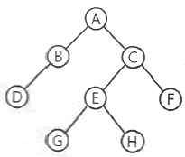
- A B C D E F G H
- D B A G E H C F
- A B D C E G H F
- B D G H E F A C
(정답률: 74%)
7. 관계대수의 조인 연산에서 결과가 동일한 애트리뷰트는 하나만 나타내는 것을 무엇이라고 하는가?
- 택일 조인
- 자연 조인
- 완전 조인
- 2차 조인
(정답률: 52%)
8. 트랜잭션의 특성 중 다음 설명에 해당하는 것은?
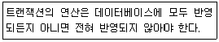
- Atomicity
- Consistency
- Isolation
- Durability
(정답률: 63%)
9. 시스템 카달로그에 대한 설명으로 옳지 않은 것은?
- DBMS가 스스로 생성하고 유지하는 데이터베이스 내의 특별한 테이블들의 집합이다.
- 데이터베이스 구조에 관한 메타 데이터를 포함한다.
- 데이터베이스 구조가 변경될 때마다 DBMS는 자동적으로 시스템 카탈로그 테이블을 갱신한다.
- 일반 사용자도 SQL을 사용하여 직접 시스템 카탈로그를 갱신할 수 있다.
(정답률: 73%)
10. 인사 테이블의 주소 필드에 대한 데이터 타입을 VARCHAR(10)으로 정의하였으나, 필드 길이가 부족하여 20바이트로 확장하고자 한다. 이에 적합한 SQL 명령은?
- MODIFY FIELD
- MODIFY TABLE
- ALTER TABLE
- ADD TABLE
(정답률: 66%)
11. SQL 명령 중 DDL에 해당하는 것으로만 짝지어진 것은?
- SELECT, INSERT, UPDATE
- UPDATE, DROP, INSERT
- ALTER, DROP, UPDATE
- CREATE, ALTER, DROP
(정답률: 77%)
12. 데이터 모델이 포함하는 구성요소와 거리가 먼 것은?
- concept
- structure
- operation
- constraint
(정답률: 62%)
13. 뷰(view)에 대한 설명으로 옳은 것은?
- 둘 이상의 기본 테이블에서 유도된 실제 테이블이다.
- 시스템 내부의 물리적 표현으로 구현된다.
- 뷰 위에 또 다른 뷰를 정의할 수 없다.
- 뷰는 데이터의 논리적 독립성을 제공한다.
(정답률: 62%)
14. 릴레이션의 특징으로 옳지 않은 것은?
- 모든 튜플은 서로 다른 값을 갖는다.
- 하나의 릴레이션에서 튜플의 순서는 없다.
- 각 속성의 릴레이션 내에서 유일한 이름을 가지며, 속성의 순서는 큰 의미가 없다.
- 한 릴레이션에서 나타난 속성 값은 논리적으로 분해 가능한 값이어야 한다.
(정답률: 66%)
15. 버블 정렬을 이용한 오름차순 정렬시 3회전 후의 결과는?
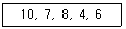
- 7, 8, 4, 6, 10
- 7, 10, 8, 4, 6
- 4, 6, 7, 8, 10
- 7, 4, 6, 8, 10
(정답률: 75%)
16. DBMS의 필수기능 중 데이터 제어기능에 해당하지 않는 것은?
- 병행수행 제어
- 무결성 유지 제어
- 사용자와 데이터베이스 사이의 인터페이스 수단 제공
- 보안 및 권한 검사
(정답률: 60%)
17. 다음 ( ) 에 알맞은 용어는?
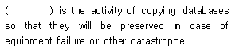
- Transaction
- Backup
- RDBMS
- DBA
(정답률: 73%)
18. 해싱에서 동일한 홈 주소로 인하여 충돌이 일어난 레코드들의 집합을 무엇이라고 하는가?
- Backet
- Collision
- Synonym
- Working Set
(정답률: 68%)
19. 데이터베이스의 정의에 관한 옳은 내용 모두를 나열한 것은?
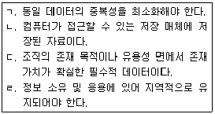
- ㄱ, ㄹ
- ㄱ, ㄴ, ㄷ
- ㄴ, ㄷ, ㄹ
- ㄱ, ㄴ, ㄷ, ㄹ
(정답률: 70%)
20. 관계 데이터베이스의 정규화에 대한 설명이다. 괄호의 내용으로 옳은 것은?
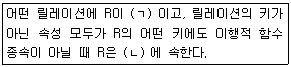
- ㄱ : 1NF, ㄴ : 2NF
- ㄱ : 3NF, ㄴ : 2NF
- ㄱ : 2NF, ㄴ : 3NF
- ㄱ : 3NF, ㄴ : 1NF
(정답률: 69%)
2과목: 전자 계산기 구조
21. 다음 중 입출력 프로세스와 관계가 없는 것은?
- DMA
- 폴드인터럽트(Polled interrupt)
- 데이지체인(daisy-chain)
- 인터리빙(interleaving)
(정답률: 37%)
22. 기억 소자로서 표준 플립플롭을 사용하는 것은?
- dynamic RAM(DRAM)
- static RAM(SRAM)
- PROM
- EPROM
(정답률: 50%)
23. 다음 중 기능이 다른 연산자는?
- COMPLEMENT
- OR
- AND
- EX-OR
(정답률: 78%)
24. 중앙처리장치에서 마이크로 동작의 실행이 순서적으로 발생할 수 있도록 하는 역할을 담당하는 것은?
- 레지스터(REGISTER)
- 제어(CONTROL) 신호
- 누산기(ACCUMULATOR)
- 프로그램 카운터(PROGRAM COUNTER)
(정답률: 49%)
25. CPU가 직접 제어하는 방식 중에서 입출력 장치의 요구가 있을 때 데이터를 전송하는 제어 방식은?
- 프로그램 입출력 제어 방식
- 인터럽트 입출력 제어 방식
- 채널에 의한 입출력 제어 방식
- DMA에 의한 입출력 제어 방식
(정답률: 42%)
26. 명령어의 연산자(operation code)의 기능과 관계가 없는 것은?
- 입출력 기능
- 제어 기능
- 논리연산 기능
- 주소지정 기능
(정답률: 47%)
27. 전원 공급이 중단되어도 내용이 지워지지 않으며, 전기적으로 삭제하고 다시 쓸 수도 있는 기억장치는?
- SRAM
- PROM
- EPROM
- EEPROM
(정답률: 62%)
28. 다음 주변 장치 중 그 성격이 다른 하나는?
- scanner
- CRT
- printer
- plotter
(정답률: 52%)
29. 0-주소 명령어의 형식에서 결과자료는 어디에 저장되는가?
- 스택
- 누산기
- 범용 레지스터
- 명령 레지스터
(정답률: 67%)
30. 다음 Interrupt 중 우선순위가 가장 높은 것은?
- Program Interrupt
- I/O Interrupt
- Paging Interrupt
- Power Failure Interrupt
(정답률: 66%)
31. N개의 입력 데이터에서 입력선을 선택하여 단일 채널로 송신하는 것은?
- 인코더
- 감산기
- 전가산기
- 멀티플렉서
(정답률: 59%)
32. parity bit에 대한 설명으로 옳은 것은?
- error 검출용 bit 이다.
- bit 위치에 따라 weight 값을 갖는다.
- BCD code에서만 사용한다.
- error bit 이다.
(정답률: 75%)
33. 254×4비트의 구성을 갖는 메모리 IC를 사용하여 4096×16비트 메모리를 만들고자 한다. 몇 개의 IC가 필요한가?
- 16
- 32
- 64
- 128
(정답률: 48%)
34. 명령어 사이클(Instruction Cycle)이 아닌 것은?
- Fetch Cycle
- Control Cycle
- Indirect Cycle
- Interrupt Cycle
(정답률: 57%)
35. 다음 중 소수점 이하를 잃어버리는 절단(truncation) 현상인 것은?
- (10001111)2을 좌측으로 시프트
- (10001111)2을 우측으로 시프트
- (11110000)2을 좌측으로 시프트
- (11110000)2을 우측으로 시프트
(정답률: 50%)
36. 다음과 같은 함수를 카르노맵(karnaugh-map)을 이용하여 간략화한 식은?
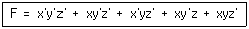
- F = xy' + z'y
- F = xy + x'z'
- F = z' + xy'
- F = xy + x'y'
(정답률: 47%)
37. 마이크로오퍼레이션에서 중앙처리장치의 정보를 기억장치에 기억시키는 동작은 무엇인가?
- LOAD
- STORE
- TRANCE
- BRANCH
(정답률: 69%)
38. 다음 뺄셈의 값은?
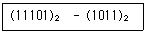
- 10010
- 10100
- 01010
- 10101
(정답률: 65%)
39. 동기 가변식 마이크로 사이클에 관한 설명으로 틀린 것은?
- CPU의 시간을 효율적으로 이용할 수 있다.
- 마이크로 오퍼레이션 수행시간이 현저한 차이를 나타낼 때 사용한다.
- 제어기의 구현이 단순한다.
- 그룹화된 각 마이크로 오퍼레이션들에 대하여 서로 다른 사이클 시간을 정의한다.
(정답률: 67%)
40. SRAM과 DRAM에 대한 설명으로 옳은 것은?
- SRAM의 소비전력이 DRAM 보다 낮다.
- DRAM은 SRAM에 비해 속도가 빠르다.
- SRAM은 재충전이 필요 없는 메모리이다.
- DRAM의 가격이 SRAM보다 고가이다.
(정답률: 59%)
3과목: 시스템분석설계
41. 시스템의 특성 중 시스템이 정의된 기능을 오류가 없이 정확히 발휘하기 위해 정해진 규정이나 한계, 또는 궤도로부터 이탈되는 사태나 현상을 미리 인식하여 그것을 올바르게 수정해 가는 것을 의미하는 것은?
- 목적성
- 자동성
- 제어성
- 종합성
(정답률: 70%)
42. 다음 설명에 해당하는 소프트웨어 개발주기 모형은?
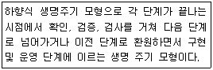
- 단계적 모형
- 구조적 모형
- 객체지향적 모형
- 폭포수 모형
(정답률: 63%)
43. 프로세스 설계 시 유의해야 할 사항으로 가장 거리가 먼 것은?
- 사용자의 하드웨어와 프로그래밍에 관한 상식 수준을 고려한다.
- 신뢰성과 정확성을 고려하여 처리 과정을 명확하게 표현한다.
- 시스템의 상태 및 구성요소, 기능 등을 종합적으로 표시한다.
- 오류에 대비한 체크 시스템도 고려한다.
(정답률: 67%)
44. 파일 편성 방법 중 순차파일 편성 방법의 특징이 아닌 것은?
- 집계용 파일이나 단순한 마스터 파일 등이 대표적인 응용 파일이다.
- 기본 키 값에 따라 순차적으로 배열되어 있다.
- 파일내 레코드 추가, 삭제시 파일 전체를 복사할 필요가 없다.
- 기억공간의 활용률이 높다.
(정답률: 69%)
45. 자료 사전에서 자료의 연결(and)시 사용하는 기호는?
- =
- { }
- ( )
- +
(정답률: 68%)
46. 파일 편성 중 랜덤 편성에 대한 설명으로 옳지 않은 것은?
- 특정 레코드 접근이 직접 가능하다.
- 대화형 처리에 적합하다.
- 주소 계산 방법에는 직접 주소법, 디렉토리 조사법, 해싱 함수 이용법 등이 있다.
- 충돌 발생의 염려가 없으므로 예비 기억 공간의 확보가 필요 없다.
(정답률: 73%)
47. LOC 기법에 의해 예측된 모듈의 라인수가 80000 라인이고 개발에 투입된 프로그래머의 수가 4명, 프로그래머의 월 평균 생산량이 1000 라인이라고 할 때, 이 소프트웨어를 완성하기 위해 개발에 필요한 기간은 얼마인가?
- 10개월
- 15개월
- 20개월
- 25개월
(정답률: 74%)
48. 문서화에 대한 설명으로 거리가 먼 것은?
- 시스템 보수 및 운용하는 그룹에 인계 인수 작업이 용이하다.
- 시스템 개발 프로젝트의 관리가 용이하다.
- 개발자의 순서도작성, 코딩, 디버깅, 테스팅 만을 위해서 작성한다.
- 개발 진척 관리의 지표가 될 수 있다.
(정답률: 75%)
49. 코드 설계 절차의 순서로 옳은 것은?
- 코드 대상 항목 결정 → 코드화 목적 설정 → 사용기간의 결정 → 사용범위의 결정 → 코드 대상의 특성 분석 → 코드화 방식 결정 → 코드의 문서화
- 코드 대상 항목 결정 → 코드화 목적 설정 → 사용범위의 결정 → 사용기간의 결정 → 코드 대상의 특성 분석 → 코드화 방식 결정 → 코드의 문서화
- 코드 대상 항목 결정 → 코드화 목적 설정 → 코드 대상의 특성 분석 → 사용범위의 결정 → 사용기간의 결정 → 코드화 방식 결정 → 코드의 문서화
- 코드 대상 항목 결정 → 코드화 목적 설정 → 코드 대상의 특성 분석 → 코드화 방식 결정 → 사용범위의 결정 → 사용기간의 설정 → 코드의 문서화
(정답률: 43%)
50. 객체 지향 개념에서 이미 정의되어 있는 상위 클래스(수퍼 클래스 혹은 부모 크래스)의 메소드를 비롯한 모든 속성을 하위 클래스가 물려 받는 것을 무엇이라고 하는가?
- abstraction
- method
- inheritance
- message
(정답률: 53%)
51. 시스템의 기본 요소 중 입력된 자료를 가지고 결과를 얻기 위하여 변환, 가공하는 행위를 의미하는 것은?
- feedback
- control
- process
- output
(정답률: 51%)
52. 출력 설계 단계 중 출력 항목 명칭, 출력 정보의 목적, 기밀성 유무와 보존, 이용자 및 이용 경로, 출력 정보의 이용 주기 및 시기 등을 검토하는 단계는?
- 출력 배분의 설계
- 출력 정보 내용의 설계
- 출력 매체의 설계
- 출력 이용의 설계
(정답률: 54%)
53. 모듈화의 특징이 아닌 것은?
- 모듈의 이름으로 호출하여 다수가 이용할 수 있다.
- 변수의 선언을 효율적으로 하여 기억장치를 유용하게 사용할 수 있다.
- 실행은 독립적이며, 컴파일은 종속적이다.
- 모듈마다 사용할 변수를 정의하지 않고 상속하여 사용할 수 있다.
(정답률: 59%)
54. 입력의 형식 중 발생한 정보를 원시 전표 위에 기록하고 일정 시간 단위로 수집하여 매체화 전문 기기에서 매체화해서 일괄 입력하는 방식은?
- 집중 입력 방식
- 분산 입력 방식
- 직접 입력 방식
- 반환 입력 방식
(정답률: 60%)
55. 검사의 종류 중 대차대조표에서 대변과 차변의 합계를 비교, 체크하는 것과 같이 입력 정보의 여러 데이터가 특정 항목 합계 값과 같다는 사실을 알고 있을 때 컴퓨터를 이용해서 계산한 결과와 분명히 같은지를 체크하는 방법은?
- Blank Check
- Matching Check
- Limit Check
- Balance Check
(정답률: 58%)
56. 출력 방식 중 출력 시스템과 입력 시스템이 일치된 방식이며, 일단 출력된 정보가 다시 이용자의 손에 의해 입력되는 시스템은?
- 턴 어라운드 시스템
- 디스플레이 출력 시스템
- 파일 출력 시스템
- COM 시스템
(정답률: 73%)
57. 프로세스의 표준 처리 패턴 중 마스터 파일 내의 데이터를 트랜잭션 파일로 추가, 변경, 삭제하여 항상 최근의 정보를 갖는 마스터 파일을 유지하는 것은?
- Conversion
- Sort
- Update
- Merge
(정답률: 73%)
58. 십진 분류 코드의 특징이 아닌 것은?
- 배열이나 집계 용이
- 코드의 범위 확장 용이
- 자료의 삽입 및 추가 용이
- 기계 처리 용이
(정답률: 69%)
59. 파일 설계 순서로 옳은 것은?
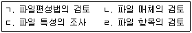
- ㄱ → ㄴ → ㄷ → ㄹ
- ㄴ → ㄷ → ㄱ → ㄹ
- ㄱ → ㄷ → ㄴ → ㄹ
- ㄹ → ㄷ → ㄴ → ㄱ
(정답률: 58%)
60. 코드 설계 단계 중 다음 고려사항과 가장 관계있는 것은?
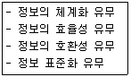
- 코드 목적 명확화
- 코드 대상 항목 결정
- 코드 대상 특성 분석
- 사용 범위 결정
(정답률: 31%)
4과목: 운영체제
61. FIFO 기법을 적용하여 작업 스케줄링을 하였을 때, 다음 작업들의 평균 회수시간(Turnaround time)은?(단, 문맥교환시간은 무시한다.)
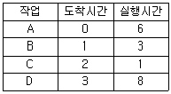
- 9.25
- 8.25
- 7.75
- 7.25
(정답률: 42%)
62. HRN 스케줄링 기법을 적용할 경우 우선 순위가 가장 높은 것은?
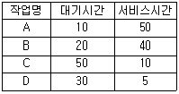
- A
- B
- C
- D
(정답률: 61%)
63. 먼저 도착한 요청이 먼저 서비스를 받으며, 일단 요청이 도착하면 실행 예정순서가 고정된다는 점에서 공평한 디스크 스케줄링 정책은?
- SSTF
- SCAN
- FCFS
- C-SCAN
(정답률: 60%)
64. 운영체제에 대한 옳은 설명 모두를 나열한 것은?
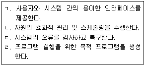
- ㄱ, ㄹ
- ㄴ, ㄹ
- ㄱ, ㄴ, ㄷ
- ㄱ, ㄴ, ㄷ, ㄹ
(정답률: 56%)
65. 파일 디스크립터가 가지고 있는 정보가 아닌 것은?
- 파일의 구조
- 접근 제어 정보
- 보조기억장치상의 파일 위치
- 파일의 백업 방법
(정답률: 62%)
66. 은행원 알고리즘(banker's algorithm)과 관계가 깊은 것은?
- 교착상태 지연
- 교착상태 발견
- 교착상태 회피
- 교착상태 회복
(정답률: 65%)
67. 운영체제의 운용 기법 중 시분할(Time-Sharing) 처리 시스템에 대한 설명으로 옳지 않은 것은?
- 하나의 CPU를 여러 개의 작업들이 일정한 시간 간격동안 사용함으로써 각각의 작업은 CPU를 공유한다.
- Round-Robin 방식이라고도 한다.
- 다중프로그래밍 방식과 결합하여 모든 작업이 동시에 진행되는 것처럼 대화식 처리가 가능하다.
- 시스템의 효율 향상을 위하여 작업량이 일정한 수준이 될 때까지 모아두었다가 한꺼번에 일시에 처리한다.
(정답률: 69%)
68. SJF(Shortest Job First) 스케줄링에서 작업 도착 시간과 CPU 사용시간은 다음 표와 같다. 모든 작업들의 평균 대기시간은 얼마인가?
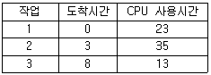
- 15
- 16
- 24
- 25
(정답률: 53%)
69. 프로세스를 스케줄링 하는 목적으로 옳지 않은 것은?
- 모든 작업에 대한 공평성을 유지해야 한다.
- 응답시간을 최소화해야 한다.
- 프로세스의 처리량을 최소화해야 한다.
- 경과시간의 예측이 가능해야 한다.
(정답률: 62%)
70. 분산처리 운영체제 시스템의 구조 중 선형구조에 대한 설명으로 옳지 않은 것은?
- 시스템 내의 각 사이트가 인접한 다른 두 사이트와만 직접 연결된 구조이다.
- 사이트의 증가에 따른 통신 회선도 증가한다.
- 중앙 사이트의 고장시 모든 통신이 단절된다.
- 비교적 간단한 구조이며, 유지보수가 용이하다.
(정답률: 53%)
71. SSTF 스케줄링 알고리즘을 이용할 경우 현재 헤드가 12 트랙에 위치한다면 가장 먼저 처리되는 트랙은?(단, 현재 헤드는 바깥쪽에서 안쪽으로 진행 중이며, 가장 안쪽의 트랙 번호는 0 이다.)
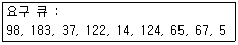
- 5
- 14
- 98
- 183
(정답률: 65%)
72. UNIX의 쉘(Shell)에 대한 설명으로 틀린 것은?
- 사용자의 커널 사이에서 중계자 역할을 한다.
- 스케줄링, 기억장치 관리, 파일 관리, 시스템호출 인터페이스 등의 기능을 가진다.
- 여러 가지의 내장 명령어를 가지고 있다.
- 사용자 명령의 입력을 받아 시스템 기능을 수행하는 명령어 해석기이다.
(정답률: 57%)
73. 다음 설명이 의미하는 것은?
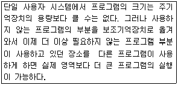
- 오버레이(overlay)
- 구역성(locality)
- 워킹 셋(working set)
- 스레드(thread)
(정답률: 56%)
74. 분산처리 운영 시스템에 대한 설명으로 적당하지 않은 것은?
- 시스템을 구성하는 소형 컴퓨터들의 자율성을 보장하므로 전체 시스템의 통합적 제어기능은 불필요하다.
- 하나의 대형 컴퓨터에서 하던 일을 지역적으로 분산된 여러 개의 소형 컴퓨터에서 분담 수행하므로 시스템의 효율을 증대시킬 수 있다.
- 데이터 처리 장치와 데이터베이스가 지역적으로 분산되어 있으며 정보교환을 위해 네트워크로 상호 결합된 시스템이다.
- 자료가 중앙에 집중된 대형 컴퓨터의 고장으로 인한 업무 마비를 예방할 수 있다.
(정답률: 66%)
75. 16K의 작업을 40K 공백의 작업공간에 할당했을 경우, 사용된 기억장치 배치전략 기법은?
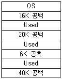
- First-Fit
- Worst-Fit
- Last-Fit
- Best-Fit
(정답률: 70%)
76. 디렉토리 구조 중 모든 파일이 유일한 이름을 가지고 있어야 하며, 하나의 디렉토리 내에 위치하여 관리되는 구조는?
- 트리 디렉토리 구조
- 비순환 그래프 디렉토리 구조
- 1단계 디렉토리 구조
- 2단계 디렉토리 구조
(정답률: 55%)
77. 3 페이지가 들어갈 수 있는 기억장치에서 다음과 같은 순서로 페이지가 참조될 때 FIFO 기법을 사용하면 페이지 부재(page fault)는 몇 번 발생하는가?(단, 현재 기억장치는 모두 비어 있다고 가정한다.)
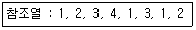
- 4
- 5
- 6
- 8
(정답률: 54%)
78. 데이터 암호화 시스템 중, 암호화 키와 해독 키가 따로 존재하여 암호화 키는 공용 키로 공개되어 있고 해독 키는 개인 키로 비밀이 보장되어 있는 방식은?
- 비밀 번호(password)
- DES(Data Encryption Standards)
- 공개 키 시스템(public key system)
- 디지털 서명(digital signature)
(정답률: 58%)
79. 다음은 무엇에 대한 정의인가?
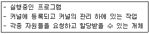
- Page
- Semaphore
- Monitor
- Process
(정답률: 75%)
80. UNIX에 대한 설명으로 옳지 않은 것은?
- 다양한 유틸리티 프로그램들이 존재한다.
- 멀티 유저, 멀티 테스킹을 지원한다.
- 2단계 디렉토리 구조의 파일 시스템을 갖는다.
- 대화식 운영체제이다.
(정답률: 68%)
5과목: 정보통신개론
81. 데이터 교환방식 중 축적 교환방식에 해당하지 않는 것은?
- 메시지 교환방식
- 회선 교환방식
- 데이터그램 패킷교환방식
- 가상회선 패킷교환방식
(정답률: 51%)
82. 정보통신의 발달에 큰 기여를 하였던 미국 항공회사의 좌석 예약 시스템은?
- SAGE
- CTSS
- SABRE
- ALOHA
(정답률: 45%)
83. 프로토콜의 기능 중 전송된 데이터를 수신하는 개체가 근원지로부터 송신되는 데이터의 전송량이나 전송속도를 제한하는 기능은?
- 연결제어
- 흐름제어
- 오류제어
- 동기화
(정답률: 72%)
84. 다음 중 광섬유케이블의 장점이 아닌 것은?
- 안정된 통신 및 누화 방지
- 많은 중계 급전선 필요
- 광대력이며 대용량 전송
- 경량 및 부피가 적음
(정답률: 68%)
85. OSI 7계층 중 데이터 링크 계층에 해당되는 프로토콜이 아닌 것은?
- HDLC
- PPP
- LLC
- UDP
(정답률: 58%)
86. HDLC(High Level Data Link Control) 프로토콜에 대한 설명으로 틀린 것은?
- 흐름 및 오류제어를 위한 방식으로 ARQ를 사용할 수 있다.
- 링크는 점대점, 다중점 및 루프 형태로 구성할 수 있다.
- 특정 문자 코드에 따라서 필드의 해석이 달라지므로 코드에 의존성을 갖는다.
- 단방향, 반이중, 전이중 방식의 통신방식을 제공한다.
(정답률: 57%)
87. 아날로그 음성신호를 표본화(sampling)하면 어떤 형태의 펄스로 변환되는가?
- PAM
- PWM
- PCM
- PPM
(정답률: 35%)
88. 통신 프로토콜의 기본적인 구성 요소가 아닌 것은?
- 제어(Contorl)
- 구문(Syntax)
- 의미(Semantics)
- 타이밍(Timing)
(정답률: 52%)
89. 변조방식 중 ASK 변조란 어떤 변조인가?
- 전송편이 변조
- 주파수편이 변조
- 위상편이 변조
- 진폭편이 변조
(정답률: 50%)
90. 다음 설명에 해당하는 에러검출기법은?
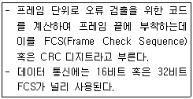
- 순환 중복 검사
- 수평 패리티 검사
- 블록 합 검사
- 수직 패리티 검사
(정답률: 48%)
91. 정보통신시스템의 기본적인 구성 중 이용자와 정보통신 시스템과의 접점에서 데이터의 입출력을 담당하는 것은?
- 단말장치
- 정보처리시스템
- 데이터전송회선
- 변복조장치
(정답률: 52%)
92. OSI-7 계층 중 네트워크 종단(end) 시스템 간의 신뢰성 있고 투명한 데이터의 전송을 담당하는 계층은?
- 응용계층
- 표현계층
- 전송계층
- 물리계층
(정답률: 68%)
93. 효과적인 데이터통신 시스템이 갖는 기본 특성으로 가장 거리가 먼 것은?
- 전달성(delivery)
- 복구성(recovery)
- 정확성(accuracy)
- 적시성(timeliness)
(정답률: 40%)
94. 잡음이 있는 통신채널의 경우 통신용량을 표시하는 샤논이론의 식 C = B log2(1+S/N)에 대한 기호 설명으로 옳은 것은?
- C : 신로전력
- B : 대역폭
- S : 잡음전력
- N : 통신용량
(정답률: 54%)
95. 데이터통신에서 송ㆍ수신이 쌍방향으로 동시에 통신이 가능한 전송방식은?
- Simplex
- Half-Duplex
- Full-Duplex
- Single-duplex
(정답률: 72%)
96. 가상회선 패킷교환 방식에 대한 설명으로 옳은 것은?
- 수신은 송신된 순서대로 패킷이 도착한다.
- 우회 경로로 패킷을 전달할 수 있어 신뢰성이 높다.
- 비연결형 서비스 방식이다.
- 대역폭 설정에 융통성이 있다.
(정답률: 34%)
97. 다음 중 전화회선을 이용하지 않는 통신서비스는?
- FAX
- TELETEXT
- ARS
- VIDEOTEX
(정답률: 36%)
98. ATM 교환기에서 처리되는 셀의 길이는?
- 24바이트
- 48바이트
- 53바이트
- 64바이트
(정답률: 51%)
99. 디지털 시그널링(Digital Signaling)을 위한 데이터 비트를 디지털 전송 신호 요소로 대응시키는 장치는?
- 부호화기(Encoder)
- 복호화기(Decoder)
- 변조기(Modulator)
- 복조기(Demodulator)
(정답률: 31%)
100. 통신시스템에서 다음과 같은 설명에 해당하는 잡음은?
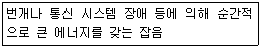
- 충격성 잡음
- 누화 잡음
- 열 잡음
- 상호 변조 잡음
(정답률: 71%)